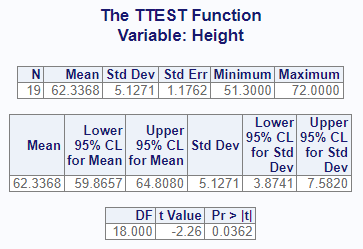
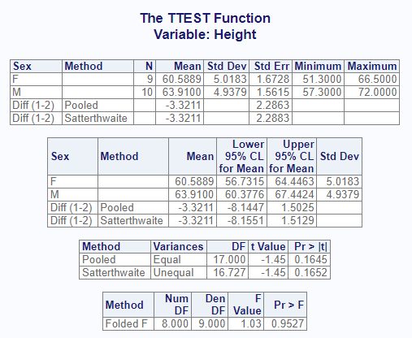
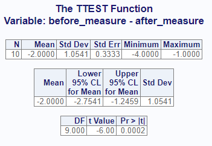
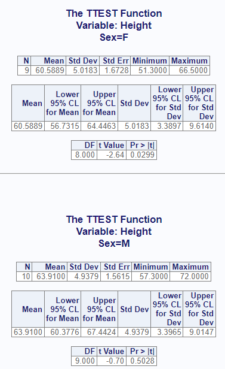

The proc_ttest function simulates some of the
functionality of SAS® PROC TTEST. It can compute T-Tests and confidence
limits for one sample, paired samples, and two independent samples. The
function is both interactive and returns a list of data frames that can
be used for further analysis or reporting.
For the one and two sample T-Tests, we will use the following data.
This sample data is identical to the sashelp.class
dataset:
# Create sample data
cls <- read.table(header = TRUE, text = '
Name Sex Age Height Weight
Alfred M 14 69.0 112.5
Alice F 13 56.5 84.0
Barbara F 13 65.3 98.0
Carol F 14 62.8 102.5
Henry M 14 63.5 102.5
James M 12 57.3 83.0
Jane F 12 59.8 84.5
Janet F 15 62.5 112.5
Jeffrey M 13 62.5 84.0
John M 12 59.0 99.5
Joyce F 11 51.3 50.5
Judy F 14 64.3 90.0
Louise F 12 56.3 77.0
Mary F 15 66.5 112.0
Philip M 16 72.0 150.0
Robert M 12 64.8 128.0
Ronald M 15 67.0 133.0
Thomas M 11 57.5 85.0
William M 15 66.5 112.0')A one-sample T-Test is used to determine if the mean of the target
variable is significantly different from a baseline or null hypothesis.
To perform this test, the target variable is passed on the
var parameter, and the null hypothesis is passed as an
option. Like this:
# Turn off printing to pass CRAN checks
options("procs.print" = FALSE)
# Single sample test
res1 <- proc_ttest(cls, var = Height, options = c(h0 = 65))
# View results
res1
# $Statistics
# VAR N MEAN STD STDERR MIN MAX
# 1 Height 19 62.33684 5.127075 1.176232 51.3 72
#
# $ConfLimits
# VAR MEAN LCLM UCLM STD
# 1 Height 62.33684 59.86567 64.80801 5.127075
#
# $TTests
# VAR DF T PROBT
# 1 Height 18 -2.264144 0.03615222Observe that the results of the function is a list of three data frames: “Statistics”, “ConfLimits”, and “TTests”. If working in RStudio and printing is enabled, these same three result sets will also sent to the viewer:

The calculated p-value of 0.0362 suggests that the null hypothesis can be rejected, and that there is a significant difference between 65 and the mean of “Height”.
Now let’s test two independent samples. To test two independent
samples, the target variable is passed on the var parameter
as above. But the variable is split into two groups, as identified by
the variable on the class parameter. Here we will perform
another analysis on “Height”, and attempt to determine if there is a
significant difference between Males and Females with respect to
height:
# Perform two-sample analysis
res2 <- proc_ttest(cls, var = Height, class = Sex)
# View results
res2
# $Statistics
# VAR CLASS METHOD N MEAN STD STDERR MIN MAX
# 1 Height F <NA> 9 60.588889 5.018328 1.672776 51.3 66.5
# 2 Height M <NA> 10 63.910000 4.937937 1.561513 57.3 72.0
# 3 Height Diff (1-2) Pooled NA -3.321111 NA 2.286282 NA NA
# 4 Height Diff (1-2) Satterthwaite NA -3.321111 NA 2.288340 NA NA
#
# $ConfLimits
# VAR CLASS METHOD MEAN LCLM UCLM STD
# 1 Height F <NA> 60.588889 56.731461 64.446317 5.018328
# 2 Height M <NA> 63.910000 60.377613 67.442387 4.937937
# 3 Height Diff (1-2) Pooled -3.321111 -8.144744 1.502522 NA
# 4 Height Diff (1-2) Satterthwaite -3.321111 -8.155098 1.512875 NA
#
# $TTests
# VAR METHOD VARIANCES DF T PROBT
# 1 Height Pooled Equal 17.00000 -1.452625 0.1645363
# 2 Height Satterthwaite Unequal 16.72695 -1.451319 0.1651880
#
# $Equality
# VAR METHOD NDF DDF FVAL PROBF
# 1 Height Folded F 8 9 1.032825 0.9526904The interactive output looks like this:

The T-Test reveals that there is no significant difference in the mean height between males and females in the sample data provided.
For the paired T-Test, we will use the following data:
# Create sample data
paird <- read.table(header = TRUE, text = '
subject_id before_measure after_measure region
1 12 15 A
2 14 16 A
3 10 11 A
4 15 18 A
5 18 20 A
6 20 22 B
7 11 12 B
8 13 14 B
9 16 17 B
10 9 13 B')To perform a paired T-Test, we use the paired parameter
on the proc_ttest() function, like so:
# Perform paired analysis
res3 <- proc_ttest(paird, paired = "before_measure * after_measure")
# View results
res3
# $Statistics
# VAR N MEAN STD STDERR MIN MAX
# 1 ..diff 10 -2 1.054093 0.3333333 -4 -1
#
# $ConfLimits
# VAR MEAN LCLM UCLM STD
# 1 ..diff -2 -2.754052 -1.245948 1.054093
#
# $TTests
# VAR DF T PROBT
# 1 ..diff 9 -6 0.0002024993Here is the interactive report:

By default, the proc_ttest() function returns datasets.
Whether and what datasets the function returns are controlled by the
output parameter. There are three primary options: “out”,
“report”, and “none”. The “out” option is the default and returns
datasets meant for further manipulation and analysis. The “report”
keyword requests the exact datasets used in the interactive report. The
“none” keyword indicates that you don’t want any datasets returned. In
this case, the function will return a NULL.
Here is an example that shows the difference in the “report” and “out” options:
# Output dataset using "report" option
res1 <- proc_means(dat,
stats = v(median, sum, q1, q3),
output = report)
# View results
res1
# VAR MEDIAN SUM Q1 Q3
# 1 x 3 29 2.0 5.5
# 2 z 65 506 57.5 75.5
# Output dataset using "all" option
res2 <- proc_means(dat,
stats = v(median, sum, q1, q3),
output = out)
# View results
res2
# TYPE FREQ VAR MEDIAN SUM Q1 Q3
# 1 0 8 x 3 29 2.0 5.5
# 2 0 8 z 65 506 57.5 75.5As can be seen in the above example, the “out” dataset includes additional variables for TYPE and FREQ. These additional variables can be turned off with options:
# Turn off TYPE and FREQ variables
res3 <- proc_means(dat,
stats = v(median, sum, q1, q3),
output = all,
options = v(notype, nofreq))
# View results
res3
# VAR MEDIAN SUM Q1 Q3
# 1 x 3 29 2.0 5.5
# 2 z 65 506 57.5 75.5The proc_ttest function provides a grouping parameter:
by. The by parameter identifies a variable or
variables for subsetting the input data.
Here is the single sample analysis shown above, but using the
by parameter to perform separate tests for Males and
Females:
# By grouping
res4 <- proc_ttest(cls, var = Height,
by = Sex, options = c(h0 = 65))
# View Results
res4
# $Statistics
# BY VAR N MEAN STD STDERR MIN MAX
# 1 F Height 9 60.58889 5.018328 1.672776 51.3 66.5
# 2 M Height 10 63.91000 4.937937 1.561513 57.3 72.0
#
# $ConfLimits
# BY VAR MEAN LCLM UCLM STD
# 1 F Height 60.58889 56.73146 64.44632 5.018328
# 2 M Height 63.91000 60.37761 67.44239 4.937937
#
# $TTests
# BY VAR DF T PROBT
# 1 F Height 8 -2.637001 0.02985198
# 2 M Height 9 -0.698041 0.50278618For the interactive report, the by groups will be separated onto their own page:

Next: Data Manipulation